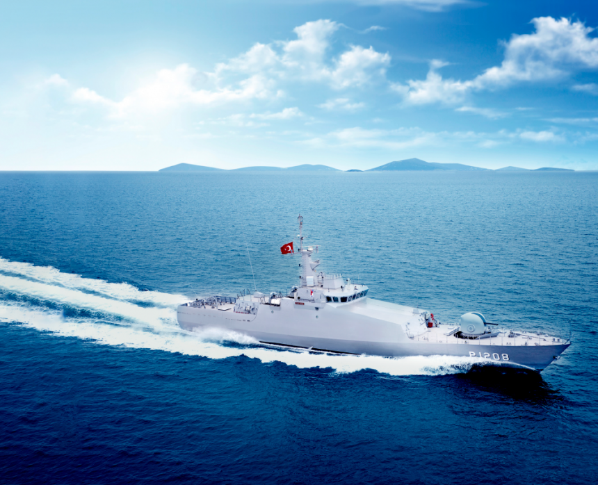
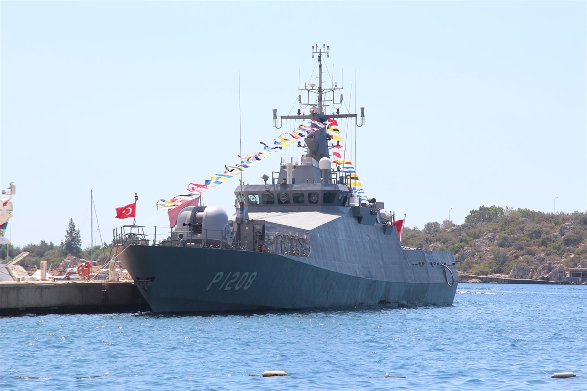
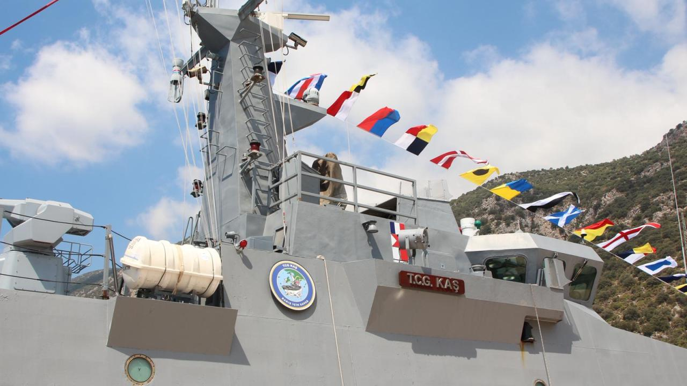

❮
❯
Tuzla sınıfı karakol botlarının bir üyesi.
TCG Kaş (P-1208), Türk Deniz Kuvvetleri için geliştirilen Tuzla sınıfı yeni tip karakol botlarının bir üyesidir. Platform kıyı güvenliği, liman koruması, deniz gözetleme ve devriye görevleri için tasarlanmıştır.
Tuzla sınıfı gemiler küçük deplasmanlı fakat görev odaklı sensör ve silah sistemleri taşıyan karakol botlarıdır. Bu gemiler özellikle liman girişleri, deniz üsleri ve kritik kıyı bölgelerinde sürekli devriye görevleri için optimize edilmiştir.
TCG Kaş ayrıca sonar ve denizaltı savunma roket sistemi ile sınırlı denizaltı savunma harbi kabiliyeti sunmaktadır.



| Gemi Sınıfı | Tuzla Sınıfı Karakol Botu |
| Gemi Adı | TCG Kaş |
| Borda Numarası | P-1208 |
| Program | Yeni Tip Karakol Botu (NTPB) |
| Görev Profili | Kıyı güvenliği, liman devriyesi, deniz gözetleme |
| Operasyon Alanı | Kıyısal sular ve üs bölgeleri |
| Tam Boy | 56.9 metre |
| Genişlik | 8.9 metre |
| Draft | 2.6 metre |
| Deplasman | 410-430 ton |
| Gövde Yapısı | Çelik gövde |
| Üstyapı | Çelik üst yapı |
| Tahrik Sistemi | 2 × dizel motor |
| Şaft Sistemi | Çift şaft tahrik sistemi |
| Jeneratör | 2 × dizel jeneratör |
| Azami Hız | 25+ knot |
| Ekonomik Hız | ≈14 knot |
| Menzil | 1000-2000 deniz mili |
| Mürettebat | 32 personel |
| Ana Top | 40 mm OTO Melara Twin Compact |
| Uzaktan Komutalı Silah | 2 × 12.7 mm ASELSAN STAMP |
| ASW Roket Sistemi | Roketsan denizaltı savunma roket sistemi |
| Derinlik Bombası | Derinlik bombası lançerleri |
| Radar | X-Band navigasyon radarı |
| Elektro-Optik Sistem | Termal kamera ve lazer telemetre |
| Sonar | Düşük frekanslı gövde monteli sonar |
| Görev Uzmanlığı | Kıyı güvenliği ve liman çevresi devriyesi |
| Öne Çıkan Özellik | Kıyısal sularda yüksek manevra kabiliyeti |